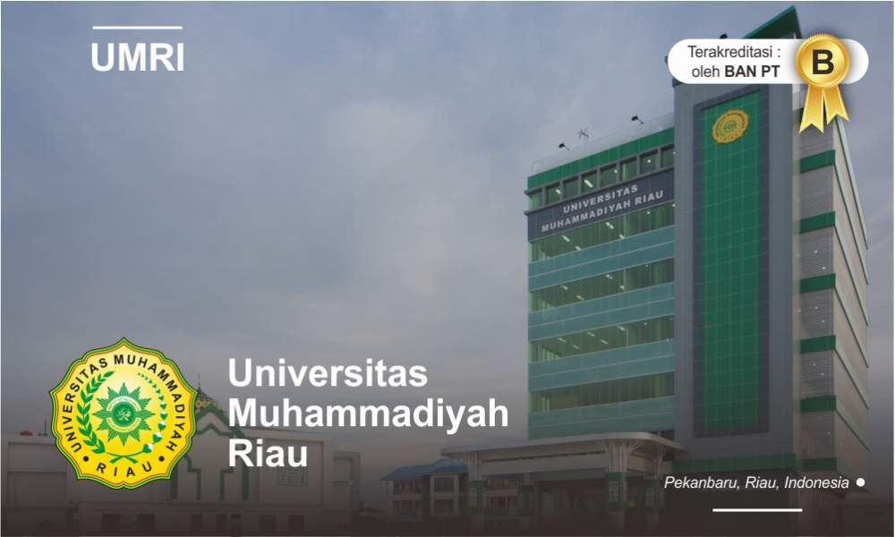

Universitas Muhammadiyah Riau (UMRI) berencana bakal menggelar kegiatan Kuliah Kerja Nyata (KKN) internasional mulai tahun depan. Demi mewujudkan hal tersebut berbagai kunjungan telah dilakukan ke negara tetangga.
"Saat nya kita mulai go internasional, kerjasama internasional akan kita giatkan, dan itu sudah dimulai tahun ini," ujar Rektor UMRI, Dr Saidul dalam kegiatan KKN Award UMRI 2022, Rabu malam 7 Desember 2022.
Saidul mengatakan Malaysia dan Thailand telah menyatakan kesiapan mereka dalam memberi kesempatan kepada Mahasiswa/i UMRI untuk bisa melaksanakan KKN, yakni dengan mengajar di sekolah sekolah.
"Beberapa pekan lalu, kami jajaran pimpinan seperti Wakil Rektor, Direktur dan Kepala lembaga telah melakukan kunjungan ke Malaysia dan Thailand, untuk menjajaki berbagai kerjasama yang bisa dilakukan, salah satunya untuk penempatan Mahasiswa KKN ini, dan Alhamdulillah kedua negara tersebut menyambut baik, dan bersedia menfasilitasi kita," jelasnya..
Tak hanya itu, Saidul menyebut dirinya mendapat masukan dari Ustad Abdul Somad (UAS) agar UMRI bisa menempatkan mahasiswa/i untuk melaksanakan KKN didaerah terpencil yang selama ini sering dia lakukan dalam menjalankan dakwah.
"Ini juga suatu tantangan dan kita minta kepada LPPM untuk bisa mulai merancang hal ini, karena memang mereka di daerah terpencil itu, yakni menuju ke lokasi dengan penuh tantangan yakni dengan naik sampan dan sebagainya. Kalau ini bisa kita lakukan, tentu ini akan sangat memiliki tantangan tersendiri bagi Mahasiswa/i kita," pungkasnya.